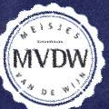
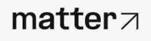
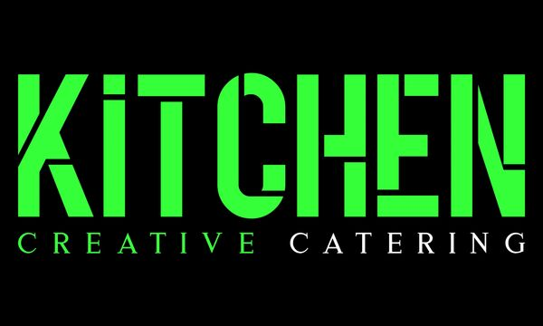
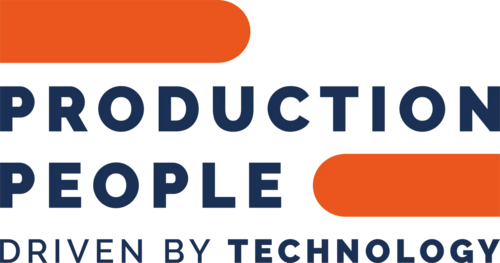

Ding, ding, ding!
Instappen maar. Op dinsdag 1 december nemen we je mee op reis.
Geen gewone tramrit door Amsterdam, maar een avond langs verschillende haltes en stadsdelen binnen de muren van de iconische oude tramremise van De Hallen.
Samen met Meisjes van de Wijn, Matter Events en De Hallen Studio's sluiten we het jaar graag af met onze favoriete relaties. En dat doen we natuurlijk niet met zomaar een borrel.
Bij iedere halte wacht een nieuwe setting, met gerechten van Kitchen Creative én natuurlijk bijpassende wijnen van Meisjes van de Wijn.
Zorg dat je op tijd bent, want de tram wacht niet!
Eén avond. Meerdere haltes. Een culinaire tramreis door Amsterdam.
Reserveer je plekEén avond, vier haltes
Stap in, schuif aan en reis van stadsdeel naar stadsdeel. Wat er precies op het bord en in het glas komt? Dat ontdek je pas bij het uitstappen.
Alle haltes liggen binnen de muren van de oude tramremise van De Hallen. Jas uit, glas in, en de stad komt vanzelf naar je toe.
Reis je met ons mee?
Vul je strippenkaart in, gooi hem in de stempelautomaat en je plek aan boord is gereserveerd.
- Wanneer
- Dinsdag 1 december 2026
- Instappen
- Vanaf 17:00 uur · eindhalte 19:15
- Waar
- De Hallen Studio's
Hannie Dankbaarpassage 18, Amsterdam
Route plannen ↗ - Aan boord
- Gerechten van Kitchen Creative, wijnen van Meisjes van de Wijn
We zien je graag aan boord!



